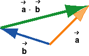

and
and  , - ,
is defined as the vector that added to gives ,
, - ,
is defined as the vector that added to gives ,
The concept of the difference of two vectors is based on the concept of the sum of two vectors. This is analogous to how the difference of two numbers is defined.
The difference between two vectors and , - ,
is defined as the vector that added to gives ,
+ ( - )
= .
Note that algebraically this equation is an identity.
There are two methods for constructing the difference -
graphically.

Comparison Method
1. Comparison Method. Arrange and
tail-to-tail, as in the diagram above, and then draw an arrow
from the tip of to the tip of
, resulting in the green vector.
The green vector is the difference - because it
satisfies the equation above. Use the tip-to-tail method of
vector addition to verify this, adding to - .

2. Add-the-Negative Method. The difference -
of two vectors also satisfies the equation
- = + (-).
Therefore, one can construct
- by reversing the direction of
to get - and then adding - to . The
preceding diagram shows the original two vectors on the left,
and the vector - added to on the right.
If one wants to calculate the difference - numerically,
the calculation will be based on either one of the diagrams
above. If the two vectors are given in components, their
difference is obtained simply by subtracting the components.
See Vectors/Scalar Components/Explain It, Page 14.